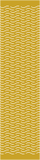
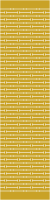
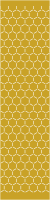

Living Hinge Generator — Operating Guide
Parametric lattice-hinge ("living hinge") SVG generator for laser cutting. Two files, which must sit in the same directory:
| File | Role |
|---|---|
living-hinge-generator.js | Library. require() it, call generate({...}) → {svg, stats, options} |
living-hinge.js | CLI front end (executable, #!/usr/bin/env node) |
Requires Node ≥ 10.12. No dependencies, no install step.
> The tuning numbers in this guide are starting points, not tested values. They are > derived from geometry, not from cut material. Nothing in this toolchain has been > validated against real ply or acrylic. Cut a coupon (see Finding your real > numbers) before committing to a full panel.
Get the files
- Everything as a ZIP — the CLI, the library, this guide, all eight cut-ready examples and the test coupons.
- Repository — the code, if you want to change a pattern or read how it works.
Released under CC0 1.0 — do what you like with them, no attribution needed. Built for LaserMadeMusic.
1. What it actually does
It emits an SVG containing a rectangular panel outline plus a field of cuts that let a rigid sheet bend along one axis (or two, for the biaxial patterns). It does not do nesting, tabs, joinery, or kerf compensation — it produces the hinge field and the panel rectangle, and you compose that into a larger part.
Everything is computed in millimetres internally. --units in only changes what gets written out.
Panel convention
x = 0 x = width
| |
y = 0 +----------------------------------------+ --.
| solid end tab | | margin
+----------------------------------------+ --'
| ==== ==== ==== ==== ==== ==== |
| ==== ==== ==== ==== ==== | hinge field
| ==== ==== ==== ==== ==== ==== | (rows of slits)
| ==== ==== ==== ==== ==== |
+----------------------------------------+ --.
| solid end tab | | margin
y=length+----------------------------------------+ --'
<----------- width -------------->
slits run ACROSS the width; the panel rolls ALONG the length--width— the span the slits run across. The bend axis is parallel to this.--length— the direction the panel rolls up. More length = more rows = gentler curve.--margin— solid end tab at each end of the length. This is your glue/fixing surface.
The rule everything else serves: slits must reach x=0 and x=width. An uncut rail down either long edge stiffens the entire panel and it will not flex. The generator enforces this — it is why --side and --cell get resized (§6) and why the crosshatch edge cuts are exempt from --minSliver.
2. Quick start
cd living-hinge # wherever you cloned or unzipped it
./living-hinge.js # 50 × 200 mm straight, to ./
./living-hinge.js -p wave -w 80 -l 300 # wave pattern, 80 × 300 mm
./living-hinge.js -p dogbone -w 2in -l 10in # inch input, mm output
./living-hinge.js -p chevron -w 3in --units in # inch input AND inch output
./living-hinge.js --all --outdir ./hinges # all 8 patterns at one size
./living-hinge.js --list # pattern names + their defaults
./living-hinge.js --help # full option listAdd --dry-run to any command to see the stats and the filename it would write without touching the disk. Use it constantly — it is instant and it is how you iterate.
./living-hinge.js -p dogbone --bridge 2.5 --hole 0.4 --dry-run
# dogbone slit=10.5 bridge=2.5 hole=0.4 holeDia=0.8 ligament=1.7 pitch=3 rows=62 ...As a library
var gen = require('./living-hinge-generator');
var r = gen.generate({ pattern: 'wave', width: 80, height: 300, bridge: 1.5 });
// r.svg -> the SVG string
// r.stats -> { slit, bridge, wavelength, ..., pattern, cuts }
// r.options -> every resolved option, after defaults and fittingNote the library says height, the CLI says --length. Same thing.
3. Complete option reference
Panel
| Option | Default | Notes | |
|---|---|---|---|
-p, --pattern <name> | straight | One of the eight in §5 | |
-w, --width N | 50 | Span the slits cross | |
-l, --length N | 200 | Roll direction | |
--margin N | 6 | Solid end tab at each end. See §7 | |
| `--units mm\ | in` | mm | Output units only |
Tuning (pattern-dependent)
| Option | Default | Applies to |
|---|---|---|
--pitch N | 3 (3.5 torsional) | straight, dogbone, wave, chevron, torsional |
--bridge N | 2 (3 dogbone) | straight, dogbone, wave, chevron, torsional |
--segments N | scales with width | the same five — whole number, min 2 |
--targetSlit N | 12 | the same five — what --segments aims for |
--hole N | 0.5 | dogbone only — radius, not diameter |
--cap N | 1 | torsional only — end-cap half-length |
--wavelength N | 13 | wave, chevron |
--amplitude N | 1 | wave, chevron — half-height |
--step N | 0.5 | wave only — polyline resolution |
--side N | 5 | honeycomb — target, gets fitted (§6) |
--cell N | 6.25 | auxetic, crosshatch — target, gets fitted (§6) |
--gap N | 1.2 / 1.5 | honeycomb, auxetic — uncut node size |
--slit N | 4.5 | crosshatch only |
--minSliver N | 1 | all — drop clipped cuts shorter than this |
An option that does not apply to your pattern is reported on stderr and ignored, not silently dropped:
living-hinge: --hole does not apply to straight; ignoring itOutput & safety
| Option | Default | Notes |
|---|---|---|
-o, --out <file> | — | Complete path. Appends .svg if missing. Not combinable with --outdir/--all |
--outdir <dir> | . | Created if absent |
-a, --all | — | Every pattern at these dimensions |
-f, --force | — | Overwrite. Default is to refuse |
--dry-run | — | Stats only, no files |
--maxCuts N | 200000 | Ceiling on emitted cuts |
--maxPoints N | 3200000 | Ceiling on polyline coordinates |
--maxCuts / --maxPoints exist so a mistyped feature size fails in a second instead of exhausting memory. You will only ever touch them for a genuinely enormous panel.
Input formats
- Bare numbers are millimetres:
--width 80 - Suffixes convert that one value:
--width 2in,--width 3cm,--width 80mm,--width 2" - A suffix does not change output units. Only
--units indoes that. --segments,--maxCuts,--maxPointsare counts: no suffix, no fractions.--flag=valueand-w80and-w 80all work.
4. Suggested starting numbers
Unvalidated. Treat as a first guess to bracket with a coupon test.
| Material | --bridge | --pitch | --targetSlit | Notes |
|---|---|---|---|---|
| 3 mm ply | 1.5 – 2.0 | 3.0 | 12 | The shipped defaults sit at the stiff/strong end |
| 3 mm acrylic | 2.0 – 2.5 | 3.0 – 3.5 | 12 | Brittle. Go wider on the bridge, expect fewer bend cycles |
| 1.5 mm ply / card | 1.0 – 1.5 | 2.0 – 2.5 | 8 – 10 | Thinner stock tolerates a narrower ligament |
| 6 mm ply | 2.5 – 3.5 | 4.0 – 5.0 | 15 – 20 | Thick stock needs a long ligament to bend at all |
The two knobs that matter most:
--bridgeis the ligament. It is the uncut material between collinear slits, and it is what actually bends and what actually breaks. Too narrow → snaps. Too wide → the panel stays rigid. This is the number to sweep first.--pitchis the row spacing. Smaller pitch = more rows over the same length = tighter achievable radius and a smoother curve, at the cost of more cutting time and a weaker panel overall.
--targetSlit sets slit length indirectly: the generator picks segments = round(width / targetSlit), so slit length stays near your target as panels get wider. Prefer it over --segments, which hardcodes a count that stops making sense at a different width. If you pass both, --segments wins and you get a warning.
5. The eight patterns
Each is committed cut-ready in examples/ at 50 × 200 mm — the size every figure below is quoted at — so the numbers in each section describe a file you can open. All eight span the full panel width, x = 0 to x = 50, which is the rule §1 says everything else serves.
previews/ holds a display rendering of each — gold is the panel that stays, cream the slits the laser removes — with the cut stroke thickened and painted onto the panel. Browse those; cut the ones in examples/. A real cut file is a 0.02mm hairline on no background at all, which most viewers show almost invisibly against a transparency checkerboard.
 |
 |
 |
|||||
| straight | dogbone | wave | chevron | torsional | honeycomb | auxetic | crosshatch |
{kind=link}
{kind=link}
{kind=link}
{kind=link}
{kind=link}
{kind=link}
{kind=link}
{kind=link}
Click any one to download its cut file.
Stats below are real output at the default 50 × 200 mm, margin 6.
straight — the default; start here
Plain staggered slits. Fewest cuts, fastest to cut, strongest for a given bridge.
==== ==== ==== ==== row A
==== ==== ==== ==== row B (offset half a period)
==== ==== ==== ==== row Aslit=11 bridge=2 pitch=3 rows=62 segments=4 → 279 cuts, 9.0 KB
- Use when: single-axis bend, and you have no reason to use anything else.
- Optimal-ish:
--bridge 1.5 --pitch 3for 3 mm ply. Drop pitch to 2.5 for a tighter curve. - Stress concentrates at the slit ends. If it cracks there, switch to
dogbone.
dogbone — straight, with the stress risers removed
Adds a relief hole at each slit end. This is the fix for cracking at slit tips.
slit=10.25 bridge=3 hole=0.5 holeDia=1 ligament=2 pitch=3 rows=62 → 713 cuts, 28.5 KB
--holeis a RADIUS. The stats report bothhole(radius, matching the flag) andholeDia.- Watch
ligament— the stat that predicts failure.ligament = bridge − 2 × hole, and it is the real load-bearing width. The generator refusesligament ≤ 0. - Because the holes eat into it, dogbone needs a wider
--bridgethan straight for the same strength. Default is 3 vs straight's 2 for exactly this reason. - Optimal-ish:
--bridge 3 --hole 0.4→ ligament 2.2. Raise the hole only if it is still cracking at the tips. - ~2.5× the cuts of straight. Noticeably longer cut time.
wave — sinusoidal slits
Longer ligament path for the same pitch, so it bends more easily than straight, and the curved path distributes stress instead of concentrating it.
slit=11 bridge=2 wavelength=13 amplitude=1 pitch=3 rows=62 → 279 cuts, 74.3 KB
- All rows share the sine phase, so curves stay parallel and the spacing never closes up.
- Largest file of the eight (74 KB) — each slit is a polyline.
--stepcontrols resolution: 0.5 default, 0.25 for a visibly smoother curve at ~2× the file size. Below ~0.1 you are cutting finer than the beam and just making the file huge. - Optimal-ish:
--wavelength 13 --amplitude 1 --bridge 1.5. Keep amplitude well under half the pitch or adjacent rows crowd each other visually (they never actually collide — shared phase guarantees it).
chevron — zigzag slits
Wave's behaviour with straight-line segments. Cuts faster, file is 4× smaller (17 KB vs 74 KB), sharper look.
slit=11 bridge=2 wavelength=13 amplitude=1 pitch=3 rows=62 → 279 cuts, 17.2 KB
- Use when: you want wave's compliance but not its file size or cut time.
- Optimal-ish: same as wave. This is the better default of the two unless you specifically want the curve.
torsional — I-cuts (slit with perpendicular end caps)
Each slit gets a short perpendicular cap at each end, lengthening the torsion path. More compliant than straight at the same bridge.
slit=11 bridge=2 cap=1 pitch=3.5 rows=53 → 608 cuts, 20.3 KB
- This is an I-cut, not a spiral/S-flexure. Spirals do not tile cleanly to the panel edge.
- Hard constraint:
2 × cap ≤ pitch. Beyond that, caps from adjacent rows meet and the panel is sliced into strips. The generator refuses. - Default pitch is 3.5 (not 3) to leave cap room.
- Optimal-ish:
--cap 1 --pitch 3.5. To go more compliant, raise both together —--cap 1.5 --pitch 4.
honeycomb — hex lattice (biaxial)
Compound curvature: bends on both axes. Hex vertices stay uncut and act as the hinge nodes.
side=4.8113 gap=1.2 slit=3.6113 → 481 cuts, 23.6 KB
--sideis a target. Delivered 4.8113 from a requested 5 — see §6.--gapis the uncut node. It must be shorter than the fitted side or there is no cut left. Smaller gap = more compliant and more fragile.- Optimal-ish:
--side 5 --gap 1.2. For more flex,--gap 0.9; expect the nodes to become the failure point.
auxetic — rotating squares (biaxial)
Squares joined only at their corners; those corners rotate. Negative Poisson's ratio — it expands laterally when stretched, so it forms domes rather than cylinders.
cell=6.25 gap=1.5 slit=4.75 → 518 cuts, 20.0 KB
- Use when: you need a dome/saddle, not a roll.
--cellis a target (fitted, §6). At 50 mm wide, 6.25 divides evenly so you get exactly what you asked for.- Optimal-ish:
--cell 6.25 --gap 1.5. Smaller cells = finer, more compliant, more cuts.
crosshatch — alternating short slits (biaxial)
Checkerboard of horizontal and vertical slits. Fewest cuts of the three biaxial patterns and the simplest to reason about.
cell=6.25 slit=4.5 cells=8 x 30 edgeSlits=30 → 240 cuts, 11.4 KB
- Outer-column slits are deliberately run out to the panel edge. Those specific cuts are exempt from
--minSliver— dropping them would restore the edge rail. - Hard constraint:
slit < 2 × cell. At or beyond that, neighbouring slits merge into one continuous cut and the panel becomes a comb. Refused. - Optimal-ish:
--cell 6.25 --slit 4.5(slit ≈ 0.72 × cell). Raising slit toward the cell size increases compliance; past the cell size you are into the merge risk zone.
Picking one
| Need | Use |
|---|---|
| Simple single-axis bend | straight |
| It cracked at the slit ends | dogbone |
| More compliance, single axis | chevron (or wave if you want the look) |
| Maximum compliance, single axis | torsional |
| Cylinder in two directions | honeycomb |
| Dome / saddle | auxetic |
| Biaxial, minimum cut time | crosshatch |
6. --side and --cell are targets, not guarantees
The three lattice patterns resize their cell so the tiling divides the panel width exactly, putting a cut on both long edges. Without it you get an uncut rail up to ~1.2 mm wide down one side, and the panel will not flex.
width 30 mm --side 5 → 4.9487 (1.0% off) --cell 6.25 → 6.00 (4.0% off)
width 50 mm --side 5 → 4.8113 (3.8% off) --cell 6.25 → 6.25 (exact)
width 75 mm --side 5 → 5.0943 (1.9% off) --cell 6.25 → 6.25 (exact)
width 100 mm --side 5 → 5.0204 (0.4% off) --cell 6.25 → 6.25 (exact)Formulas: auxetic/crosshatch use cell = width / round(width / cell); honeycomb uses side = 2 × width / (√3 × m).
Deviation is typically under 4%. The delivered value appears in the stats line, the SVG <desc>, and the filename — so a file is always named for the geometry it contains. If you need an exact cell size, pick a width that is a whole multiple of it.
7. End tabs — and what happens when you minimise them
--margin is the solid band at each end of the length axis. It is what you glue, screw, or slot into the rest of the assembly. Cuts never enter it.
--margin | Rows (50×200, pitch 3) | First row at y= |
|---|---|---|
| 0 | 66 | 2.5 |
| 1 | 66 | 2.5 |
| 3 | 64 | 5.5 |
| 6 (default) | 62 | 8.5 |
| 12 | 58 | 14.5 |
| 20 | 53 | 22.0 |
You never get a zero end tab, even at --margin 0. Rows are centred in the band with a half-pitch offset, so the first row lands at least pitch/2 from the edge. At --margin 0 with pitch 3 the first row sits at y=2.5, leaving a 2.5 mm solid strip. The effective tab is:
effective tab = margin + (leftover ÷ 2) + pitch/2 where leftover = span − rows × pitchSo the practical floor for the row-based patterns is about pitch/2 — roughly 1.5 mm at default pitch. The biaxial patterns behave differently: their cuts are clipped straight at the band edge, so at --margin 0 honeycomb and auxetic really do cut to y=0 and the panel has no tab at all.
Guidance
- Don't go below ~3 mm if the tab is a glue surface. A 2.5 mm strip in 3 mm ply, with a full-width slit immediately inboard of it, is a tear-out waiting to happen.
- 5–8 mm is a sane general range; 6 is the default for that reason.
- Go larger (10–20 mm) if you are screwing, bolting, or slotting through the tab, or if the hinge carries load in tension.
--margin 0is legitimate when the hinge field runs into a larger part that provides its own fixing, or when you will trim the ends after cutting. Just know you are giving up the attachment surface.- Shrinking the margin buys you rows — 6→0 gains 4 rows on a 200 mm panel, about 6%. That is rarely worth losing the tab for. If you need more rows, lengthen the panel or reduce the pitch; both are much better levers than eating the tab.
8. Sizing the hinge for a bend radius
A lattice hinge approximates an arc, so the hinge field length is arc length:
hinge length = radius × angle(radians)
rows = hinge length ÷ pitch
panel length = hinge length + 2 × margin| Target radius | 90° needs | 180° needs | Rows @ pitch 3 (90°) |
|---|---|---|---|
| 5 mm | 7.9 mm | 15.7 mm | 3 |
| 10 mm | 15.7 mm | 31.4 mm | 6 |
| 15 mm | 23.6 mm | 47.1 mm | 8 |
| 20 mm | 31.4 mm | 62.8 mm | 11 |
| 25 mm | 39.3 mm | 78.5 mm | 14 |
| 30 mm | 47.1 mm | 94.2 mm | 16 |
| 50 mm | 78.5 mm | 157.1 mm | 27 |
| 75 mm | 117.8 mm | 235.6 mm | 40 |
Read the other way — what a given panel can do at pitch 3, margin 6:
| Panel length | Hinge band | Rows | Gentlest 90° radius |
|---|---|---|---|
| 40 mm | 28 mm | 9 | ~17 mm |
| 60 mm | 48 mm | 16 | ~31 mm |
| 80 mm | 68 mm | 22 | ~42 mm |
| 100 mm | 88 mm | 29 | ~55 mm |
| 200 mm | 188 mm | 62 | ~118 mm |
| 300 mm | 288 mm | 96 | ~183 mm |
A panel can bend tighter than the figure in the last column — you are then asking fewer rows to take more angle each, which is exactly what breaks ligaments. Treat that column as "the radius this panel reaches comfortably", and if you need tighter, add rows (longer panel or smaller pitch) rather than forcing it.
Fewer than ~6 rows in the bend behaves like a crease, not a curve.
9. Kerf
The generator emits zero-width centrelines and does no kerf compensation. Your beam removes material on both sides of every line, so the real ligament comes out narrower than the nominal --bridge.
actual ligament ≈ bridge − kerf (straight, wave, chevron, torsional)
actual ligament ≈ bridge − 2 × hole − kerf (dogbone)Typical CO₂ kerf in 3 mm ply is 0.15–0.20 mm. Dogbone at defaults:
| Kerf | hole 0.3 | hole 0.4 | hole 0.5 | hole 0.6 |
|---|---|---|---|---|
| 0.10 mm | 2.30 | 2.10 | 1.90 | 1.70 |
| 0.15 mm | 2.25 | 2.05 | 1.85 | 1.65 |
| 0.20 mm | 2.20 | 2.00 | 1.80 | 1.60 |
| 0.25 mm | 2.15 | 1.95 | 1.75 | 1.55 |
(bridge 3, ligament in mm)
Add your kerf to --bridge if you want the nominal ligament you designed. Measure kerf once on your machine and stock: cut a 20 mm square, measure it, the shortfall is one kerf.
10. Finding your real numbers
The defaults are geometry, not experience. One afternoon of coupons replaces all the guessing in §4.
cd living-hinge # wherever you cloned or unzipped it
mkdir -p coupons
for b in 1.0 1.25 1.5 1.75 2.0 2.5; do
./living-hinge.js -w 40 -l 120 --bridge $b --outdir ./coupons
doneEach lands in its own file, since differing tuning goes into the filename:
living-hinge-straight-40x120mm-bridge1.svg
living-hinge-straight-40x120mm-bridge1.25.svg
living-hinge-straight-40x120mm-bridge1.5.svg
living-hinge-straight-40x120mm-bridge1.75.svg
living-hinge-straight-40x120mm.svg <- bridge 2.0, the default, keeps the plain name
living-hinge-straight-40x120mm-bridge2.5.svgThese six are committed, in coupons/, along with a single 290 × 132 mm sheet holding all of them — coupons/coupon-sheet-bridge-sweep-290x132mm.svg — and coupons/README.md, which records the settings held constant across the sweep. You can cut the sheet without running anything.
Cut all six on one sheet, in the grain orientation you will actually use. Then:
- Bend each to 90°. Note which snap immediately.
- Cycle the survivors 20–30 times. Fatigue is what kills living hinges in service, not the first bend.
- Bend one to destruction to find the margin you actually have.
- Record the narrowest bridge that survives cycling, then add 0.25 mm as your working value.
Repeat per material and per thickness. Grain direction matters in ply — slits running across the grain behave differently from slits running along it, so test the orientation you will build in.
When you have real numbers, say so and they will be written into DEFAULTS in the generator and into the project memory, so future sessions start from measurements instead of estimates.
11. Output format
<?xml version="1.0" encoding="UTF-8"?>
<svg xmlns="http://www.w3.org/2000/svg" version="1.1"
width="50mm" height="200mm" viewBox="0 0 50 200">
<title>Living hinge - straight - 50mm x 200mm</title>
<desc>1 user unit = 1 mm. Panel 50mm x 200mm, solid end tabs 6mm. Pattern: straight; ...</desc>
<g fill="none" stroke="#000000" stroke-width="0.02" stroke-linecap="butt">
<g id="outline"><rect x="0" y="0" width="50" height="200"/></g>
<g id="hinge-slits"> ... </g>
</g>
</svg>- Physical size is declared (
width="50mm"), withviewBoxat 1 user unit = 1 mm. Import at 100% and it is correct size. - Two groups.
#outlineis the panel rectangle — delete it when embedding the hinge into a larger part.#hinge-slitsis the cut field. fill="none", black hairline 0.02 mm stroke, so cutter software reads vector cut rather than raster engrave.- With
--units in:width="1.9685in", viewBox in 1/96 in units, stroke 0.0756 (still 0.02 mm). Geometry is identical — only the units change. - Coordinates are rounded to 4 decimal places.
- The
<desc>carries the full parameter set, so a stray SVG is self-documenting. Open it in a text editor to recover what generated it.
Filenames
living-hinge-<pattern>-<width>x<length><units>[-<tuning>].svgDefault runs stay short (living-hinge-straight-50x200mm.svg). Any option differing from that pattern's default is appended (-bridge3, -margin20, -pitch2.5-bridge4), so iterating never overwrites the previous variant. Fitted values are recorded as delivered (-side5.7735, not -side6).
Existing files are never overwritten without --force.
12. When it refuses
The generator declines anything that would destroy the panel rather than cutting it. Every message names both the offending option and the way out.
| Message | Cause | Fix |
|---|---|---|
relief holes of radius 1.5mm meet across a 3mm bridge (ligament 0mm) | Dogbone holes overlap; bridge cut through | Lower --hole or raise --bridge |
caps of 3mm meet across a 3.5mm pitch | Torsional caps merge across rows | Lower --cap or raise --pitch |
gap 6mm is not shorter than the 4.8113mm hex side | No cut left after node shortening | Lower --gap or raise --side |
slit 14mm spans 12.5mm of alternating cells | Crosshatch slits merge into a continuous cut | Lower --slit or raise --cell |
bridge 20mm is too wide for 4 segments across 50mm | No room for slits | Lower --bridge or widen the panel |
pitch 30mm leaves no room for a row in the 8mm between the end tabs | Panel too short for one row | Lower --pitch, lengthen, or lower --margin |
every cut came out shorter than --minSliver (1mm) and was dropped | Feature smaller than the sliver threshold | Raise the cut length or lower --minSliver |
--segments must be at least 2 | One segment spans the full width | Use ≥ 2 |
--pitch must be greater than 0mm | Zero/negative length | Positive values only |
cut budget exceeded (--maxCuts 200000) | Feature size tiny for the panel | Coarsen, or raise --maxCuts |
polyline point budget exceeded (--maxPoints 3200000) | --step far too fine | Raise --step, or raise --maxPoints |
Set LIVING_HINGE_DEBUG=1 for a stack trace on unexpected errors.
13. Scripting
- Exit 0 on success, 1 on any failure.
- With
--all, an unbuildable pattern is reported on stderr and skipped; the rest still generate and the exit status is 1. Check it — a partial run looks like a success in the file listing. - Stats go to stdout, warnings and errors to stderr.
./living-hinge.js --all --width 5 --outdir ./tiny || echo "some patterns failed"14. Gotchas
- CLI
--length= libraryheight. Easy to trip over when moving between the two. --holeis a radius. The stats reporthole(radius) andholeDia(diameter).--segmentssilently outranks--targetSlit— you get a warning, but segments wins.- A unit suffix on an input does not change the output units.
--width 2ingives a 50.8 mm panel written in mm. You need--units infor inch output. --outwill not accept a directory; use--outdir.--allrefuses--patternrather than guessing which you meant — it does not quietly ignore one of them.- Wave files are large (74 KB at defaults, ~4× chevron). Some cutter software is slow with thousands of polyline points.
- The outline rect is not counted in
cuts— it is the panel boundary, not a hinge cut. - Defaults are aimed at ~3 mm ply/acrylic. At a very different thickness, start from §4 rather than the shipped defaults.
15. Known limitations
- No kerf compensation. Centrelines only (§9).
- No nesting, tabs, or joinery. Hinge field and panel rectangle only.
- Bend radius is not enforced. Nothing stops you generating a hinge too short for the curve you want; §8 is guidance, not a guard.
- Material behaviour is not modelled. The generator knows geometry, not grain, moisture, ply quality, or acrylic brittleness.
- Biaxial patterns have uncrossed bands — vertical lines through the node columns that cross no cut. These are the rotating hinge nodes and are inherent to those lattices, not a defect.
- The defaults remain untested against cut material. This is the single biggest gap, and only a coupon closes it.